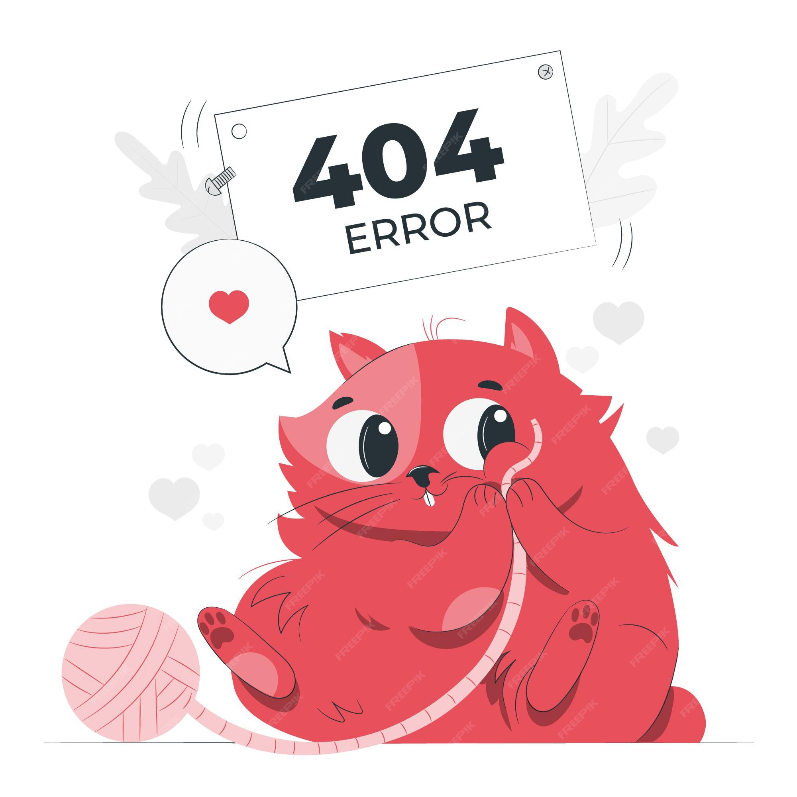

<ion-header [translucent]="true">
  <ion-toolbar>
    <ion-title>ERROR 404!!!!!</ion-title>
  </ion-toolbar>
</ion-header>

<ion-content [fullscreen]="true">
  <ion-button (click)="retroceder()">Volver</ion-button><br>
  <div class="container">
    
  </div>
</ion-content>
